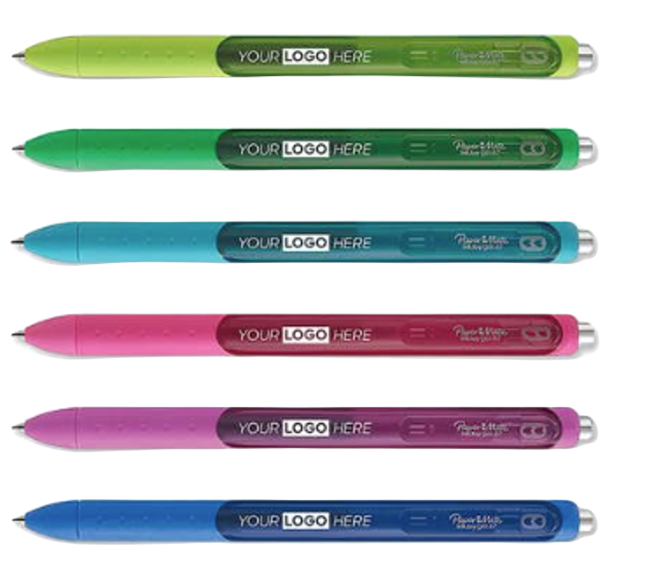

Juicy Pens - Everything you need to know.
Written by Dr. Lemon, 3.19.23, 2:00 PM EDT
So, What Even Is a Juicy Pen?
A juicy pen is a very special pen. This pen is usually an gel pen, although it can sometimes be a fancy ballpoint. Now, I know what you are thinking, "A pen? He wrote a whole artical about a pen?" Yes. Yes I did. Because these are no ordinary pens. These, are the Juicy Pens!
What makes it makes it so special?
A Juicy Pen is very special for many reasons. Number one: The feel. This pen just overall has a nice, high-quality feel to it. The grip covers most of the pen, and the part that it doesn't, you can see through to see the ink levels. Number two: The way it writes. This pen just writes better. It glides smoothly when you want it to, and can be rougher when you need it to. Number three: The ink. This thing has a thicc ink holder, not like some other pens with a skinny ink resovior. You won't run out of ink any time soon! Lastly, the level of satisfyingness. There is somethimg just so satisfying about writing or drawing with a pen just so full of ink, generous with it when you want it to be.
That sounds cool! Where do I get one?
These amazing pens can usually be found at your local Staples. When at the Staples, they can be located in the aisle to checkout, on the wall containing pens. These will be to the right, and come in many colors. You know it's the right pen if it has two hearts stacked on top of eachother at the top of the pen.
Are you sure this thing is within my budget?
I would hope so! These things everage out to about $2.00/pen, plus tax, so about $2.20 in South Carolina with tax.
What do these things look like?
